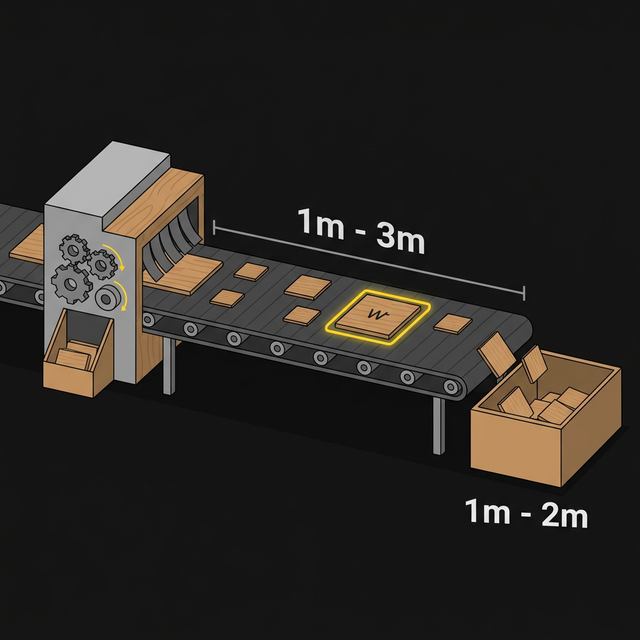

Bertrand Paradoksu'nu test etmek için 1.000.000 plaka üretme sürecidir. Teoriyi (Aksiyomlar) deneysel kanıta dönüştürür.
Makinemizin kapasitesi. Üretilen plakaların kenar uzunluğunun (L) alabileceği tüm değerlerin kümesi: $L \in [1, 3]$ m.
Banttan çıkan tekil bir plaka ve onun spesifik kenar ölçümü. Deneyin milimetrik kesinlikteki her bir sonucudur.
Başarı kriterimiz olan filtre: Kenarın 1m ile 2m arasında olması ($1 \le L \le 2$). Paradoksun çözüm noktasıdır.
